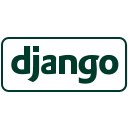
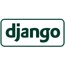

about me
I worked as a QA engineer at a tech company called Xing in Germany prior to starting the software engineering immersive course at General Assembly. I was part of a cross-functional development team working on Android, IOS, Web projects.
I helped to build products, ensure a certain level of quality and make sure that the updated codebase was ready for release. Working as a QA made me want to learn how to develop software myself and not just to test and review the end product.
I wanted to have a much more technical knowledge of software development and to be technically proficient enough to build out software projects myself.
After learning how to wireframe, design and build a full-stack app with Javascript/Python, I am eager to take the step up to building solutions.
I enjoy learning about developments in the world of cryptocurrency, especially news regarding new blockchain use cases and investing in new tokens/coins.
I love travelling. I was lucky enough to work remote so i was able to travel and work from abroad. I think that travel makes a person grow and develop like nothing else. I try to visit somewhere new every couple of months.
I live to eat! I enjoy cooking but mostly eating! Trying out new restaurants wherever I am in the world - you can a lot about a contrie's culture by what and how they eat.


 
